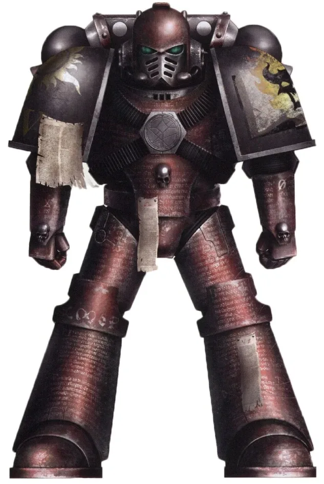

01ภาพรวม

Legion แรกที่บูชา Chaos — ผู้เผยแผ่ 'ศาสนาที่แท้จริง' ด้วยไฟและเลือด
02ต้นกำเนิด
Legion ที่ 17 ภายใต้ Lorgar ผู้เคยบูชาจักรพรรดิเป็นพระเจ้า หลังถูกลงโทษที่ Monarchia พวกเขาหันไปพบเทพแห่ง Chaos และเป็นผู้วางแผน Horus Heresy ตั้งแต่เริ่ม
03ยุค 30K — ในยุค Great Crusade และ Horus Heresy

ยุค 30K เป็น Legion ที่เคร่งศาสนาที่สุด สร้างวิหารบูชาจักรพรรดิ ถูกลงโทษจนต้องคุกเข่าในเถ้าถ่านของ Monarchia — จุดเริ่มต้นของการทรยศ
ดูภาพรวมยุค 30K ทั้งหมดที่ เนื้อเรื่องยุค 30K และความต่างของสองยุคที่ เปรียบเทียบ 30K vs 40K
04นิสัยและวัฒนธรรม
- นำโดยสภา Dark Apostle — นักบวชนักรบที่เทศนาและนำพิธีกรรม
- มุ่ง 'เปลี่ยนศาสนา' ของมนุษย์ ไม่ใช่แค่ฆ่า
- รวมเป็นหนึ่งเดียวมากกว่า Legion ผู้ทรยศอื่น ๆ
05จุดที่น่าสนใจ
- Erebus: ผู้วางแผนให้ Horus ถูกแทงด้วยมีดต้องสาป Anathame บนดวงจันทร์ Davin จนหันไปหา Chaos
- Kor Phaeron: พ่อบุญธรรมของ Lorgar และผู้นำฝ่ายหนึ่งในสภา
06วีรกรรมและเหตุการณ์สำคัญ
Isstvan V
ทรยศกลางสนามรบ
Calth
โจมตี Ultramarines แบบไม่ทันตั้งตัว
Talledus War
Kor Phaeron นำการบุกระบบดาวศักดิ์สิทธิ์ Talledus โดยดึง Iron Warriors และ Night Lords มาร่วม
07ตัวละครสำคัญ

Kor Phaeron
Keeper of the Faithผู้นำฝ่ายหนึ่งของสภา Dark Council

Erebus
Dark Apostleผู้วางแผน Horus Heresy
08ยุค 40K — สหัสวรรษที่ 41
ยุค 40K Word Bearers ทำ 'สงครามศรัทธา' แพร่ลัทธิ Chaos ในจักรวรรดิ โจมตีดาวศักดิ์สิทธิ์ของศาสนจักร
09เนื้อเรื่องล่าสุด (Era Indomitus / M42)
บุก Shrine World จำนวนมากหลังการเกิด Great Rift และ Lorgar ซึ่งปลีกตัวเก็บตัวมานับหมื่นปีเริ่มกลับมามีบทบาทอีกครั้ง
หลังการเกิด Great Rift ปฏิทินของจักรวรรดิคลาดเคลื่อน เหตุการณ์ยุคปัจจุบันจึงมักระบุเพียง 'M42' ไม่มีปีที่แน่นอน
10แกลเลอรี
